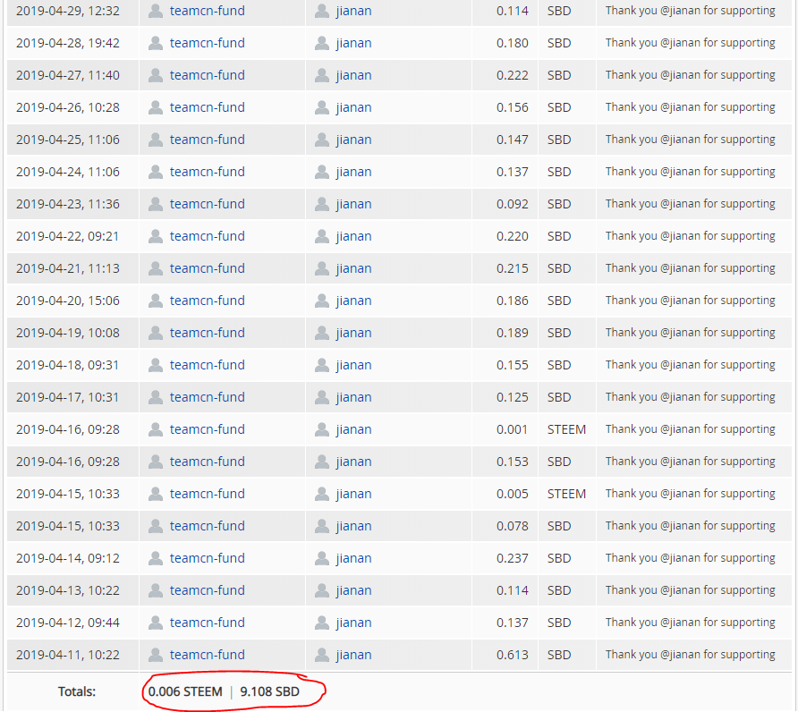
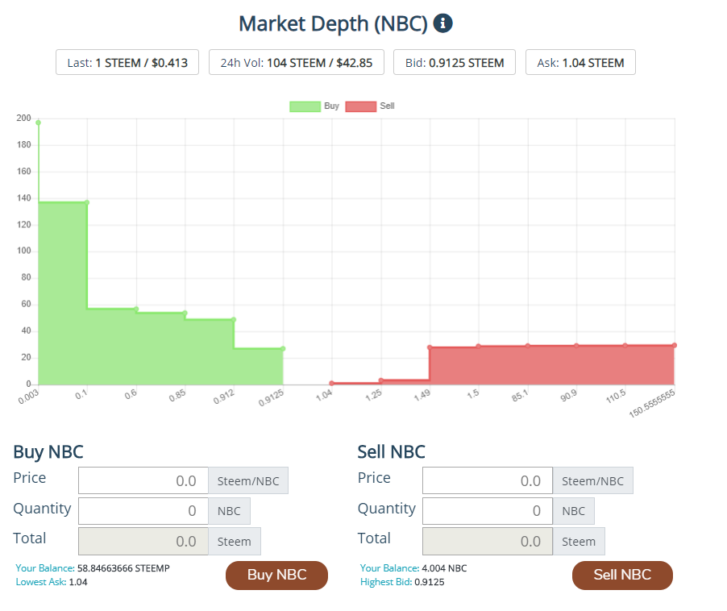

第4章 货币 Token
本章节涉及的常用问题有：
- Steem Engine 上的 Token 从何而来？
- 什么是 ENG？它是如何被使用的？
- 什么是JJM（Jiangjiangman）？它为什么火了？
- 什么是红包币？EMFOUR4 / EM
- NBC 新手币 牛掰在哪里？
4.1 NBC 新手币 5
NBC是什麼
NBC是@team-cn在steem-engine上发的一款代币。目的是取代对SBI（Steem Basic Income)的依赖，奖励社区积极分子，好文作者和在背后努力的各种编辑（好声音，steem手册，寻宝团，飞鸽传书等）
目前市场价格1 NBC = 1 STEEM，在市面上流通的NBC数量大概5000。
持有NBC的好处
每日点赞，持有新手币者，将会获得@team-cn每日一帖的点赞； 目前@team-cn账号大概有20000SP, 持有2 NBC每日会获得2% team-cn点赞（相当于400sp），如果把‘cn’ 作为首标签，还可以额外获得2%点赞(相当于800sp）。
收益分红，每日按锁仓币的比重，分享 @team-cn的SBD/STEEM收益分红； @team-cn的收益主要来自飞鸽传书50%收益，寻宝团50%收益，小卖部30%收益，@teamcn-fund每日发帖收益，还有少量来自@team-cn发帖收益。 由于收益时高时低，并不能准确估计年回报率是多少。但是超过30%年利率是肯定的。 以NBC的长期支持者嘉楠哥@jianan的NBC持有算一下年回报率：

嘉楠哥持有300 NBC 2个月，总共获得0.006 STEEM和9.108 SBD，按照目前1 SBD = 2.5 STEEM计算，2个月获得22.776 STEEM分红。一年的年利率差不多45.55%。还没算上发帖获得的点赞。
目前从原持有NBC就可以获得STEEM/SBD分红改成了只有锁仓NBC才会有分红后，锁仓NBC的用户的年利率将大大提高。
比如今天嘉楠哥获得0.33 SBD,换算成steem 是0.825 steem。一年回报率达到了100%！（需要更多数据支持，但是超过50%年回报率是妥妥的！）
- 容易变现，不需如SP般等待13周的power down周期； 很多项目需要把steem power up后才能通过代理获得每日点赞/分红。如果你想提现走人，需要5日把SP抽回，并且13周时间全部power down。这提现的周期实在有点太长了。 但是如果你持有NBC，你同样可以获得每日点赞/分红。如果你想提现走人，把手上的NBC通过steem-engine出售换成steem就可以提款走人了。
- 容易转换币权，可透过交易平台 Steem-Engine.com转赠他人。 一般如果你想把SP当成礼物送给他人，需要代理SP给他。这代理不是永久的，如果对方把SP收回，你的SP就没了。 如果持有NBC，你可以把NBC作为一个奖励或者礼物永久的送给他人。
- 持有NBC获得@sct.teamcn点赞
@sct.teamcn这个账号目前有928 staked SCT. 专门用于给持有NBC的用户的sct帖子点赞。会不断增加锁仓SCT的数量来提高点赞。算是给NBC持有者的额外福利。
NBC的价值在哪里？
NBC的价值来自@team-cn. 只要@team-cn继续下去，NBC就会有价值。
目前支撑NBC的价值的是来自各种@team-cn的基础设施，比如@cn-curation，@cn-activity，@teamcn-shop，@teamcn-fund。
@team-cn 也没有跑路的风险，因为这是个公益项目，没有盈利也没有亏损。获得的收益也全部回报给社区和持有NBC者。
怎么获得NBC？
- 通过steem-engine市场购买 目前有少量的NBC可以在市场上购买，最低卖价是1.04 STEEM。 购买链接：https://steem-engine.com/?p=market&t=NBC

- 通过代理SP给@team-cn获得 代理SP给team-cn除了可以获得每日点赞外，还可以获得每日0.05%的NBC利息（一年20%复利） 使用下面链接代理给@team-cn: 10SP, 20SP, 50SP, 100SP, 200SP, 300SP, 400SP, 500SP, 1,000SP, 5,000SP, 其他数量
- 通过参与社区建设，活动，写好文获得
- 参与不同社区活动活动，比如完成5期@team-cn每周一发布的作业就可以获得1 NBC。参与好声音，参与steem手册编辑都可以获得NBC奖励。
- 飞鸽传书每天会选2篇好文给予点赞并且每个作者获得1 NBC
- 担任好声音，寻宝团，steem手册，飞鸽传书的编辑获得NBC
NBC是社区的良心项目，设计的本意是让@team-cn可以有更多的SP支持一些社区项目，并且让好文作者，参与社区建设的人获得一些回报。大家可以放心购买并持有。
想了解更多，可以看: - NBC的白皮书 - 【新手币 NBC公告 - 2019年6月4日】有关新手币 NBC 分红条款变更/The Terms Change of NBC Daily Dividends —
4.2 SHOP币
- SHOP币 有几种玩法？
（未完待续）
作者:@ericet;编辑:@minloulou;原文链接:https://steempeak.com/cn/@ericet/steem-enginenbc-8gramkt1en↩